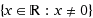
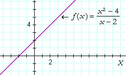
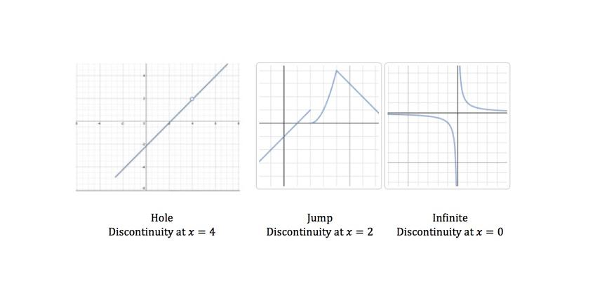

Continuity

Polynomial, rational, power, exponential, logarithmic, and trigonometric functions are continuous at all points in their domains. This means that if a domain of a function, say, sin(x)/x, is continuous at all points that are NOT 0, because its domain is, 

|
f(1)=(12-4)/(2-|1|) |
f(2)=-4 | f(3)=|3-2|-4 |
| (1-4)/(2-1) | |1|-4 | |
| -3/1 | 1-4 | |
| f(1)=-3 | f(3)=-3 |

Determine if ƒ(x) is continous at a.
*Prove that ƒ(c) exists
*Prove that the limit of ƒ(x) as x approaches c exists
*Prove that the limit as x approaches a is equal to ƒ(a).
Determine if ƒ(x) is continous at a.
*Prove that ƒ(c) exists
*Prove that the limit of ƒ(x) as x approaches c exists
*Prove that the limit as x approaches a is equal to ƒ(a).

There are 3 types of discontinuities.
1) Removable (a hole) → When a function is undefined at one point.
2) Jump → When a function splits and "jumps" to another point between 2 x values.
3) Infinite → When a vertical asymptote blocks both sides of a function from joining.
There are 3 types of discontinuities.
1) Removable (a hole) → When a function is undefined at one point.
2) Jump → When a function splits and "jumps" to another point between 2 x values.
3) Infinite → When a vertical asymptote blocks both sides of a function from joining.